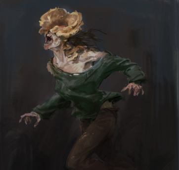

The Last of Us is a post-apocalyptic game that alters traditional zombies by using a fungal infection instead of a zombie virus.
Since the clickers cannot see, they have increased hearing that requires the player to progress very quietly through the levels.
The design is also loosely based off of a real fungal infection, adding to the fear factor of the game.